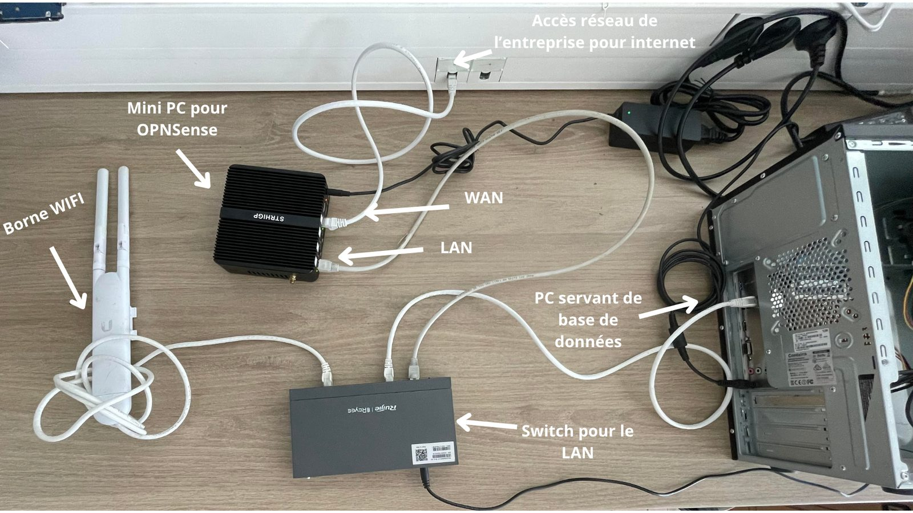
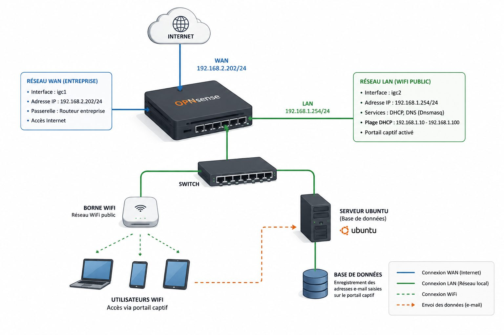
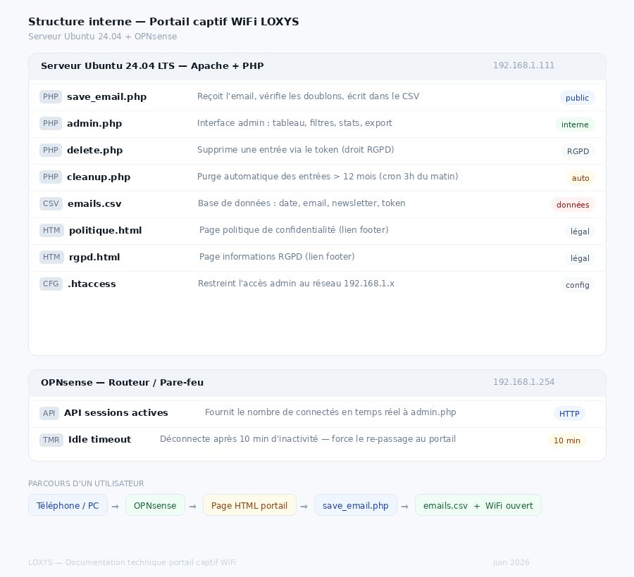
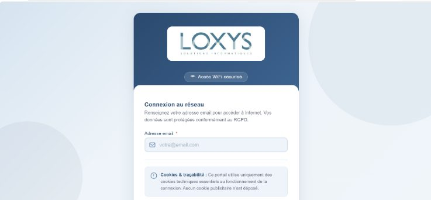
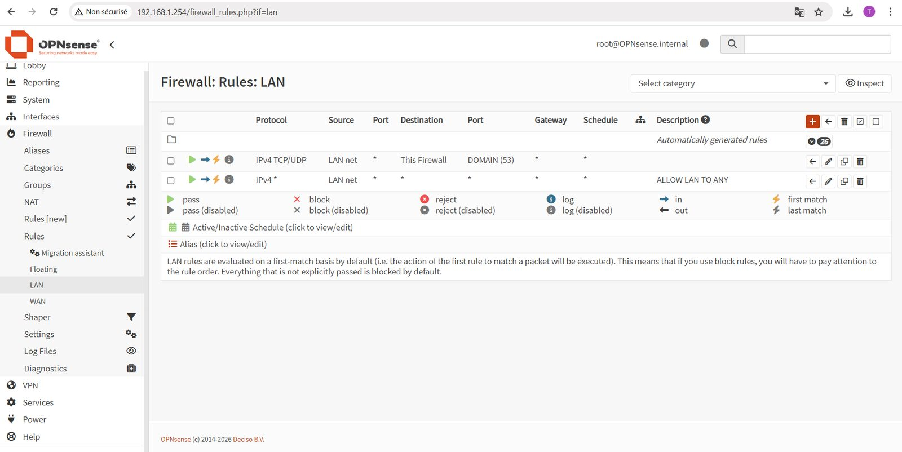
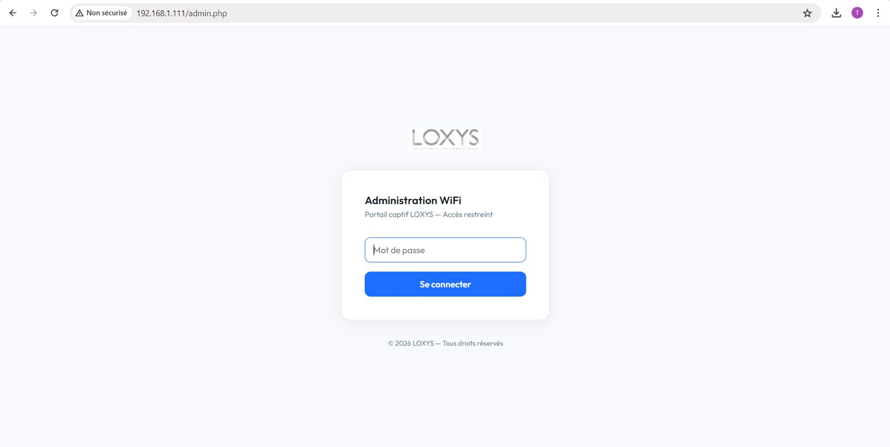
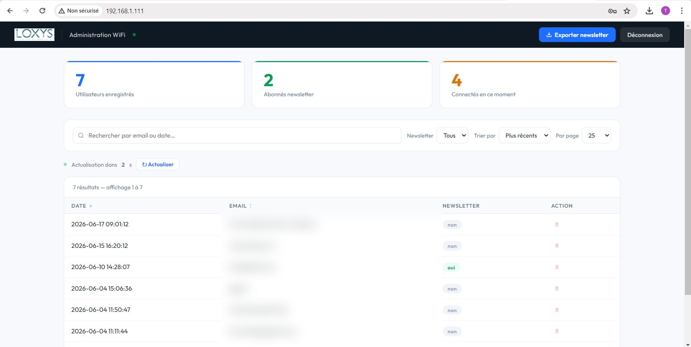
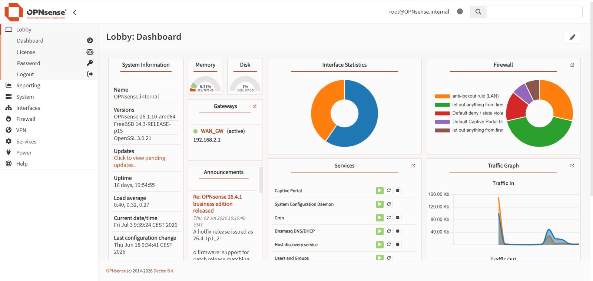

Contexte
LOXYS Solutions Informatiques (Saint-Malo-du-Bois, Vendée) gère l'informatique d'environ 130 clients professionnels avec 5 collaborateurs. L'entreprise ne proposait pas encore de portail captif à ses clients.
La demande : offrir un WiFi public gratuit aux visiteurs sans exposer le réseau interne, en collectant leur adresse e-mail de façon conforme au RGPD (consentement, droit à l'oubli, durée de conservation limitée). Le projet devait être documenté pour que LOXYS puisse ensuite le proposer à ses clients.
Architecture
| Composant | Rôle |
|---|---|
| OPNsense 26.1.10 | Pare-feu, routeur, DHCP et portail captif |
| Ubuntu Server | Serveur web Apache2 + PHP et base de données PostgreSQL (e-mails et jetons) |
| Borne UniFi UAP-AC-Mesh | Diffusion du WiFi public |
Le serveur de base de données a été installé sur un ancien PC fixe, remis en service avec une clé bootable.
Réalisation, jour par jour
- 26/05 — présentation de l'infrastructure de LOXYS, planning prévisionnel, prise en main d'OPNsense et configuration du DHCP pour les appareils reliés au switch.
- 27/05 — début du portail captif ; règles de pare-feu pour donner Internet au nouveau WiFi tout en le sécurisant.
- 28/05 — fin des règles de pare-feu et d'un premier portail captif de test ; début de la base de données sur Ubuntu Server.
- 29/05 — liaison entre la base et le portail : les e-mails et les validations RGPD et newsletter sont enregistrés.
- 01/06 — corrections (heure de connexion, validation de la newsletter) et ajout du nombre de personnes connectées en direct, grâce à un lien entre la base et OPNsense.
- 04/06 — diagnostic : les e-mails ne s'enregistraient plus ; analyse de la base et d'OPNsense.
- 05/06 — finalisation de la base et rédaction de la documentation du portail pour LOXYS.
Fonctionnalités livrées
- Page de connexion aux couleurs de LOXYS : saisie de l'e-mail et acceptation obligatoire du règlement d'utilisation ; inscription à la newsletter facultative, distincte du consentement.
- Enregistrement (
save_email.php) — e-mail horodaté et jeton de suppression unique. - Droit à l'oubli (
delete_email.php) — suppression des données via le jeton. - Purge automatique — tâche cron quotidienne qui supprime les données de plus d'un an.
- Administration (
admin.php, protégée par mot de passe) — nombre d'inscrits, nombre d'abonnés à la newsletter, nombre de connectés en direct, export CSV des abonnés avec date et heure exactes, pour prouver le consentement en cas de litige.
Difficultés et solutions
- Équipements sans navigateur — la borne WiFi et le serveur de base de données ne peuvent pas « passer » le portail captif. J'ai créé une exception dans les règles de pare-feu pour leur donner un accès direct, sinon tout le système restait bloqué.
- Heure de connexion et newsletter — en fin de semaine 1, l'heure était mal enregistrée et la validation de la newsletter incohérente ; corrigé le 01/06 en reprenant le script d'enregistrement.
- E-mails qui ne s'enregistrent plus — le 04/06, diagnostic croisé de la base et d'OPNsense pour retrouver la cause, puis finalisation le 05/06.
Conformité RGPD
| Exigence | Mise en œuvre |
|---|---|
| Consentement explicite | Case obligatoire, non pré-cochée |
| Consentement distinct pour la newsletter | Case facultative séparée |
| Durée de conservation limitée | Purge automatique au-delà d'un an |
| Droit à l'oubli | Jeton de suppression unique |
| Preuve du consentement | Export horodaté des abonnés |
Compétences E4 mobilisées
Ces compétences sont reportées dans mon tableau de synthèse E4.
Preuves







